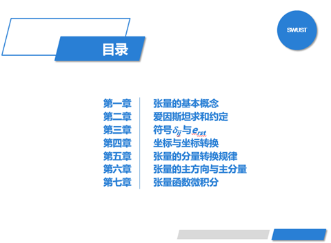
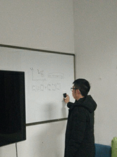
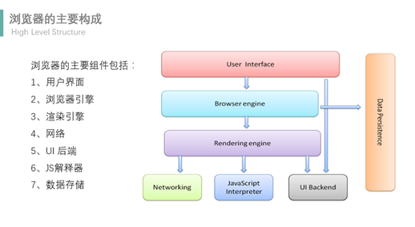
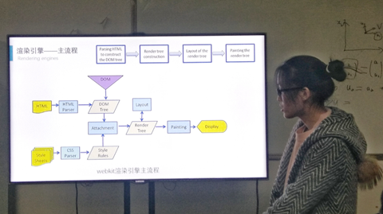
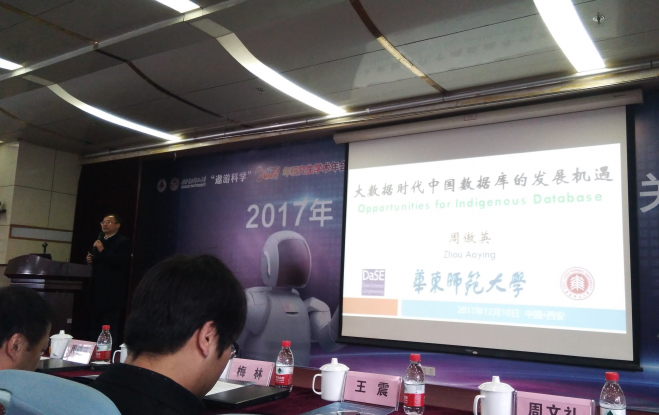

今天（12月17日）晚7点的例会照常举行了，依旧是由英俊飒爽的黄俊老师主持会议，到会人员12人，包括11名研究生。按照日常惯例，会议主要分为两部分，首先是了解到会的所有同学这周的学习工作情况，第二项是由两名同学分享知识，也就是学术交流（主要是阅读论文分享），期间可提问。这样不仅可以督促每一位同学跟进知识，同样可以通过分享可以了解其他的实验室伙伴的学习情况。
这周处在考试周外加六级考试，大部分研一的同学都忙着考人工智能，各种拿着题刷，实验室研一同学自行组织了一次答疑活动，将题库的题一一进行探讨，很有意思的一次活动，最后都应该考的不错的。小编每天刷题刷到最后，脑袋里全是遗传算法，逻辑回归的推导，当然，最后幸运的就是，考的全都会，不会的全都没考了啦，这里也希望参加六级考试的同学都能过，毕竟下次再考就加入了口试题，更不容易啦。研二的学长准备自己的小论文，项目上的工作。研三的同学都在准备着毕业大论文，还有工作面试（ ）
）
会议最后就是学术交流部分，蒙小龙师兄主讲了张量，这个总是迷糊迷糊的概念，听得多说得多，却不明所以然的东西，今天算是彻底搞明白了（ ）膜拜大神。
）膜拜大神。

这是主要内容，有兴趣的同学可以疯狂打call!!!

等等，大招还没放……………..

第二个是冯娇同学分享的浏览器的工作原理，原来每天都在打交道的浏览器竟然还有如此高深的一面，是在下孤陋寡闻了。

会上主要讲了渲染引擎的基本流程，解析树的构建。渲染引擎主要用来显示请求的内容，例如，如果请求内容为html，它负责解析html及css，并将解析后的结果显示出来。

原谅我把小娇娇拍成了一个像犯了错的孩纸（哈哈哈），但是讲的是杠杠的!!!
最后，因为上周闫博文师兄和蒙小龙师兄去西安电子科大参加了会议-智见未来，大数据的关键技术。也同我们做了分享，各个学术方向的大佬汇聚在一起，分享人工智能下的一些研究及未来发展的方向，对我们来讲，是很好的一次学习。
